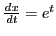

Next: Simultaneous change of both Up: Change of variable Previous: Change of the dependent Contents Index
Let  be a function of
be a function of  , and at the same time let
, and at the same time let  (and hence also
(and hence also  ) be a function of a new variable
) be a function of a new variable  .
It is required to express
.
It is required to express
Solution. , therefore
Since the formulas deduced in the Differential Calculus
generally involve derivatives of y with respect to  , such
formulas as the chain rule
are especially useful when the parametric
equations of a curve are given. Such examples were given in §6.5,
and many others will be employed in what follows.
, such
formulas as the chain rule
are especially useful when the parametric
equations of a curve are given. Such examples were given in §6.5,
and many others will be employed in what follows.